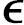

在科学中没有可以予以证明却能够不加证明地被接受的事物，虽然这个要求看来如此地合乎情理，但是当我在作为最简单的科学基础的最新方法中，亦即在研究数论的逻辑部分中遇到它时却没有引起注意[2]．在谈到算术（代数，分析）作为逻辑的一部分时，我的意思是，我认为数的概念与空间和时间的观念或直觉完全无关，并且我将它看做思维规律的直接结果，那么我对这篇论文标题所提出的问题的回答，简要地说，就是：数是人类大脑的自由创造；它们被用作更容易和更清晰地理解事物差别的手段．这个创造仅仅通过建立数的科学的纯粹逻辑过程来实现，并且由此获得我们准备用来精确地研究我们的时空观念的连续数域，而这种研究是借助确立我们的时空观念与我们大脑中创造的这个数域之间的关系进行的[3]．如果我们仔细观察一下在清点某些事物的个数或统计它们的总数时做了什么，那么就会导致我们去考虑大脑将事物与事物相联系，或将事物与事物相对应，以及用一个事物表示另一个事物的能力，并且没有这种能力就不可能进行思考．如我在这篇论文的简报[4]中已经断言过的，依我的判断，必然是将整个数的科学建立在这个唯一的因而绝对必不可少的基础上．在我关于连续性的论文发表前这个工作的轮廓已经形成，但仅仅在这篇论文问世并且经历了由于行政工作量的增加以及其他必要的事务所引起的多次中断后，我才能在1872～1878年期间把经过几位数学家审查并且特别和我进行了讨论的初稿加工成正式的文稿．它保留了相同的标题和内容，虽然安排的顺序并非最好，但所有实质性的基本思想都在文中更认真地作了详细论述．作为这样的要点，我在此要提到：有限与无限的明显的差别（64）[5]，事物的个数（Anzahl）的概念（161），证明称做完全归纳法（或从n到n+1的推断）的推理形式是真实可信的（59），（60），（80），因而归纳（或递推）定义是确定而且可靠的（126）．
这篇论文可被任何一个具有通常称作正常普通理智的人理解，对知识程度的要求是最低的，不需要专业性的哲学和数学修养．但是我清醒地感觉到一个又一个读者仅仅是被我带领着朦朦胧胧地认识作为他的忠实而亲近的朋友伴随他终身的数；他将被一系列与我们一步步的理解相对应的简单推理以及对数的定律所依赖的一串串论证的枯燥的分析吓坏，并且将由于强迫他跟随我们去证明他直觉想象看似显然且必然的真理而感到厌烦．与此相反，恰是在将这些真理归结为其他更简单的真理的可能性中，无论这一系列推理有多长和看来多么人为化，我辨认出一个方便的证明，拥有它们或确信它们从来不是借助直觉想象，而始终仅仅是全部或部分地重复单个推理得到．我想将由于完成迅速而难以描绘的推理行为与一个有能力的读者在阅读中完成的行为加以比较；这种阅读始终是全部或部分地重复那些使初学者因为要弄清楚它们而感到厌倦的单个步骤；只能以很大的可能性肯定，其中很小一部分，对于受过训练的读者为了弄清楚它们真实的意义只需付出很小的努力或智力就足够；因为，如我们知道的，偶尔出现多数受过证明训练的读者会让印刷错误从他们眼下逃脱，也就是说出现误读，如果完全重复与读懂相联系的思维链，那么这是不可能发生的事．因此，从出生之日起，我们连续地与日俱增地被引向将事物与事物相联系，从而发挥数的创造所依赖的那种大脑功能；由于这种实践连续地出现，虽然没有确定的目的，但在我们幼年及判断力和思维链趋于成熟时，我们要求存储真实的算术真理，我们的启蒙老师不适当地将它们看做一些简单自明的由直觉想象给出的东西；因而发生了许多将非常复杂的概念［例如事物的数目（Anzahl）的概念］错误地看成是简单的东西的事，在这个意义下（我想用后来形成的名言α

ι ο ανθρωποζ αριθμητιξι来表达），我希望本文作为将数的科学建立在统一的基础上的一种尝试而受到慷慨的欢迎，并且导致其他数学家将长的推理系列简化到更适当和更有吸引力的程度．依据本文的目的，我限于考虑所谓自然数列．这样，数概念的逐步扩充，零，负数，分数，无理数及复数的产生是通过归并到先前的概念来完成，而不需要引进任何外来概念（如可测量的概念，依我的看法只通过数的科学完全可以将它讲清楚），至少在我以前关于连续性的论文（1872）中对于无理数已经证明了这一点；如我在本文第3节已经证明的，用完全类似的方法，其他的扩充也能够处理，并且我准备在某个时候系统地给出整个主题．由刚才这个观点，代数和高等分析的每个定理无论它们有多大差别，都可以表示为关于自然数的定理，这看来多少有点儿是自明的并且不是新的——我反复听到狄利克雷亲口这样说过．但是我没有看到有什么是值得赞赏的——并且这确实来自狄利克雷的思想——实际就是完成这个令人厌倦的冗长的论述并坚持不使用和不承认有理数以外的结果．与此相反，新概念的创造和引进已经永恒地造就了数学和其他科学的最伟大和最富有成果的进展，而只靠旧观念困难地控制的复杂现象的频繁反复出现使得这些新概念的提出是必要的．1854年夏天我在被聘为格丁根编外讲师之际对哲学系的报告中曾论述过这个主题．这个报告的观点得到高斯的认同，但这里不宜进一步给出有关的细节．
我倒是要借此机会就上面提到的我以前关于连续性与无理数的工作做一些注释，这里给出的无理数理论是1853年完成的，它基于有理数域中出现的一个现象，我将它称为分割（Schnitt），并且是我第一个对它进行了详细研究（第4章）；它以新的实数域的连续性的证明结束（第5章的iv）．就我来说，比起外尔斯特拉斯及康托尔提出的两个与它不同的理论（并且它们也互相不同），看来它要简单些，我应该说它更加容易，并且同样完全是严格的，因为它被迪尼（U.Dini）在他的《实变函数论基础》（Fondamenti per lateorica detle funzioni di variabili reali，Pisa，1878）中没有做本质性的修改加以引用了；而在这个论述过程中提到我的名字，但在作者讨论与分割相对应的可测量的存在性时在对分割这个纯算术现象的描述中却没有提到我，这个事实容易使人们认为我的理论是以考虑这种量为基础的．事实并非如此；相反地，在我的论文的第3章中我预先提出了为什么完全拒绝引进可测量的几个理由；实际上，关于它们的存在性，在论文的末尾我已经指出：在几何研究中只是偶然提到但从未清楚地定义过算术这个术语，因而不可能在证明中应用它；此外，对于空间科学的大部分，它的结构的连续性甚至不是必要的条件．为了更清楚地说明这件事，我注意到下面的例子：如果我们任意选取3个不共线的点A，B，C，只有单个限制条件：距离AB，AC，BC的比是代数数[6]，并且认为在空间中只存在使AM，BM，CM与AB的比都是代数数的点M，那么空间由这些点M组成，易见处处不连续；但尽管有这种不连续性，并且这个空间中存在空隙，欧几里得（Euclid）的《原本》（Elements）中出现的所有构造，如我可以见到的，都恰如在完全连续的空间中那样地精确地有效；这种空间的不连续性在欧几里得几何中未被注意，甚至完全没有被发现，如果有人要说排除了连续性我们不能想象空间是什么样的，那么我要大胆对此表示怀疑，并且要提请注意下面的事实：为了清晰地领悟连续性的本质和理解除了有理的数量关系外还可以想象无理的数量关系，除了代数的数量关系外还可以想象超越的数量关系，我们需要更高级、更精细的科学训练．依我看，这一切都更漂亮：不用任何可测量概念并且只借助有限多个简单思考步骤系列，人们就可创造纯粹的连续数域；并且仅用这种方法在我的观点下人们就能够给出清晰而确定的空间概念．
相同的基于分割现象的无理数理论，坦耐利（J.Tannery）在他的《单变量函数引论》（Introduction à lathéorie des fonctions d’une variable，Paris，1886）中也论述过，如果我正确地理解了该书前言中的一段话，那么作者认为他的理论是独立的，这就是说，不仅对于我的论文，而且还有上面我引述的迪尼的《实变函数论基础》，当时他都是不知情的．这个看法对我而言，令人满意地证明了我的观念与无理数情形的本性，亦即其他数学家［例如，帕希（Pasch）的《微积分计算引论》（Einleitung in die Differential-und Integral-rechnung，Leipzig，1883］承认的事实是一致的．但是我完全不能同意坦耐利下面的说法：这个理论是贝特朗（J.Bertrand）的思想的发展，井且已经包含在他的《算术教程》（Traité d’arithmétique）中．这本书中无理数是用这样的说法定义的：无理数由所有小于它的及所有大于它的有理数来定义，斯托尔兹（Stolz）在他的《一般算术讲义》（Vorlesungen über allgemeine Arithmetik，Leipizig，1886）的第2部分的前言中——看来他未加认真研究——重复了这种说法．恕我对于这种说法发表如下的看法：认为无理数由刚才引述的说法完全定义了的观点，在贝特朗时代之前很长时间以来肯定是所有与无理数概念有关的数学家所共有的认识．这种确定无理数的方式恰好深藏在每个计算员的大脑中，他们用这种方式近似地计算方程的无理根，并且如果把无理数看做是两个可测量的比是贝特朗在他的书中所独有的（我面前放着它的1885年的第8版），那么在欧几里得给出的著名的两个比相等的定义（见《几何》，V.，5）中已经用最可能清晰的方式阐明的事正是这个确定方式，这同一个最古老的共识是我的理论以及贝特朗的理论还有许多其他将引进无理数的基础放到算术中的完全或不完全的尝试的源泉．虽然到此为止所说的与坦耐利相当一致，但经过实际检查，他不能不跟随贝特朗的工作，而贝特朗的工作就其纯粹逻辑性而言甚至没有提到分割现象，这与我的工作毫无类似之处，因为它立即求助于可测量的存在性，这是一个由于上面提到的理由被我完全拒绝的概念．除了这个事实外，表达方法看来也是采取一个个定义和证明的形式，但它们基于可测量存在性的假定，表现出与我的论文的本质性差别．我还注意到我的论文中关于定理2·3=6的严格证明是其他任何文献所没有的，这也证实了我的论文的意义，因此最好还有更多其他的并且当时我没有注意到的这样的例证．
戴德金 于哈尔兹堡（Harzburg），1887.10.5
[1]即论文《数的性质和意义》．
[2]在引起我的注意的著作中，我要提及施罗德（E.Schroder）的有价值的书《算术与代数教程》［Lehrbuch der Arithmetik und Algebra（Leipzig，1873）］，它包含了这个主题的参考文献，还要提到克罗内克（Kronecker）及赫姆霍尔茨（Helmholtz）关于数的概念及计数和测量方面的论文［在为纪念E.Zell而出版的哲学论文集（Leipzig，1887）中］．这些论文的出现导致我发表我自己的观点．我的观点在很多方面与他们类似，但在基础方面是本质上不同的，并且是我在很多年前绝对独立于其他人的工作形成的．
[3]见我的论文《连续性与无理数》（Braunschweig，1872），第3节．
[4]见狄利克雷的《数论讲义》（Vorlesungen Über Zahlentheorie，3rd edition，1897），§163．
[5]括号中的数字是论文《数的性质和意义》的小节数．
[6]见狄利克雷的《数论讲义》，第2版的§159，第3版的§160．